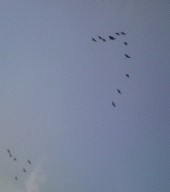
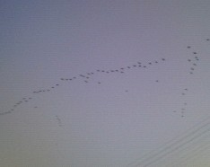
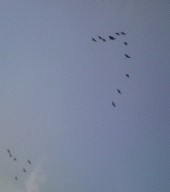
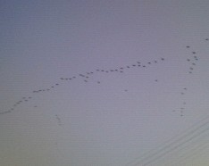

Free talk 雑談。
（305）雁行   名古屋港に近い鍋田干拓地付近で、携帯でパチリ。と云っても、雁ではなくて鵜、なので正確には鵜行....でもこのように白鳥が飛んでいても、白行とは云わないし(_ _； 正確な数は分からないが、早朝（いまの季節なら午前７時ころ）と夕方（いまの季節なら午後４時ころ）、おおよそ１時間くらい見ることができる。どこに住んでいるか知らないが、知多半島の中央付近に“鵜の山”と呼ばれる生息地がある。その生息地とエサ場の鍋田干拓地あたりの往復か。
 
名古屋港に近い鍋田干拓地付近で、携帯でパチリ。と云っても、雁ではなくて鵜、なので正確には鵜行....でもこのように白鳥が飛んでいても、白行とは云わないし(_ _；
正確な数は分からないが、早朝（いまの季節なら午前７時ころ）と夕方（いまの季節なら午後４時ころ）、おおよそ１時間くらい見ることができる。どこに住んでいるか知らないが、知多半島の中央付近に“鵜の山”と呼ばれる生息地がある。その生息地とエサ場の鍋田干拓地あたりの往復か。
以前へ 以降へ 目次へ